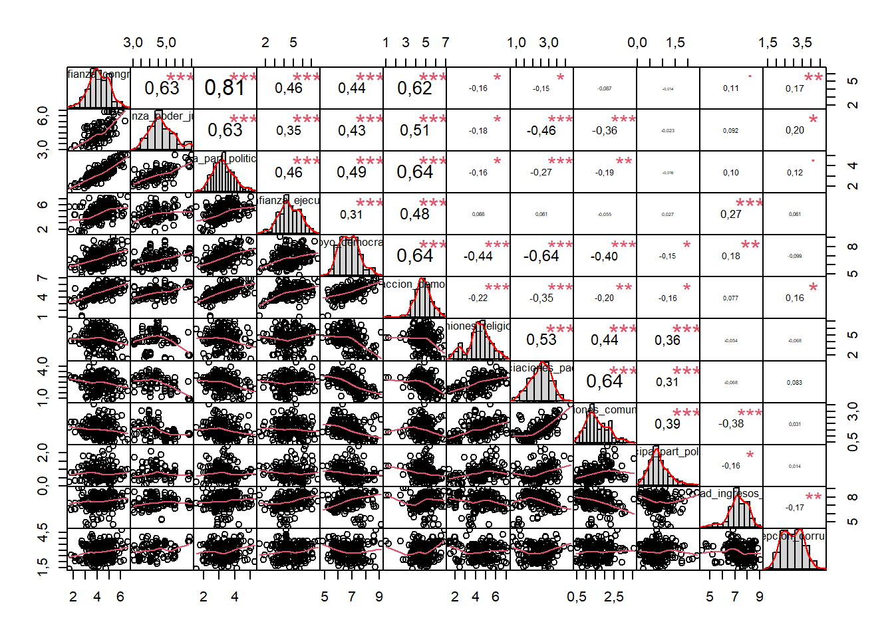
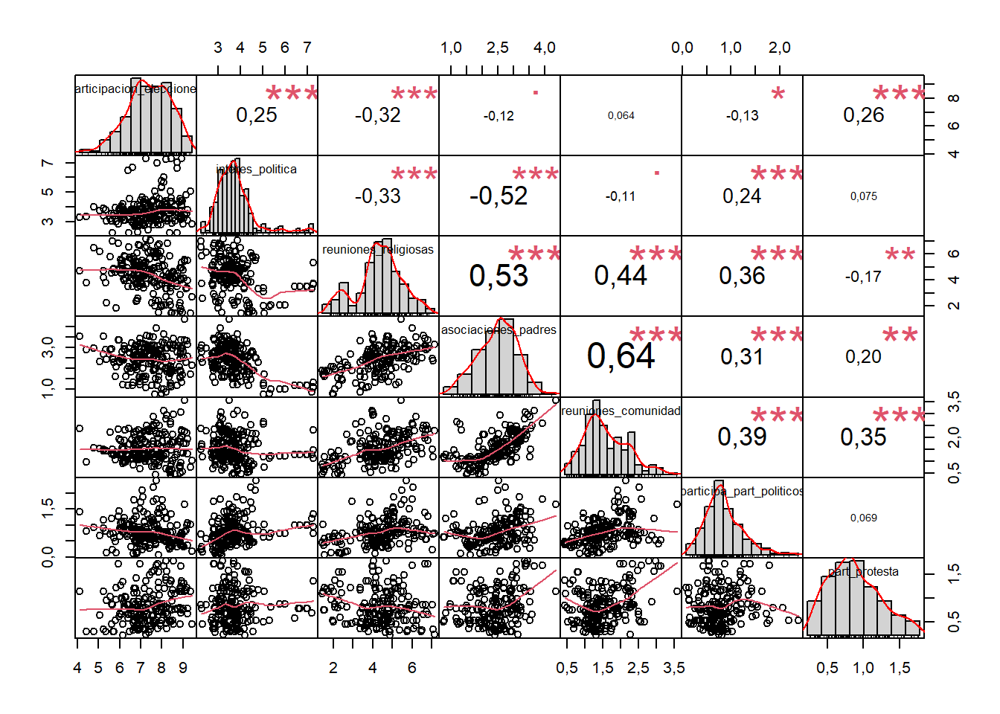
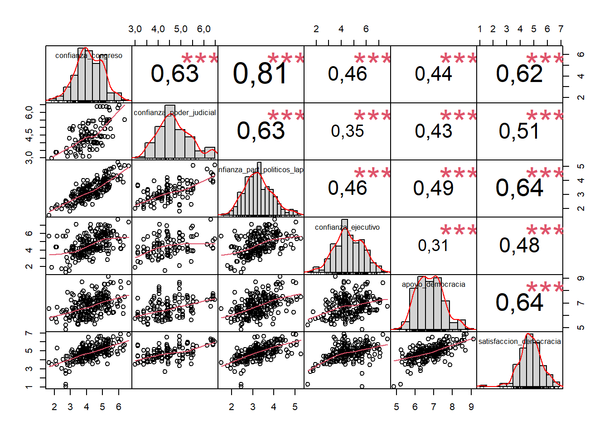
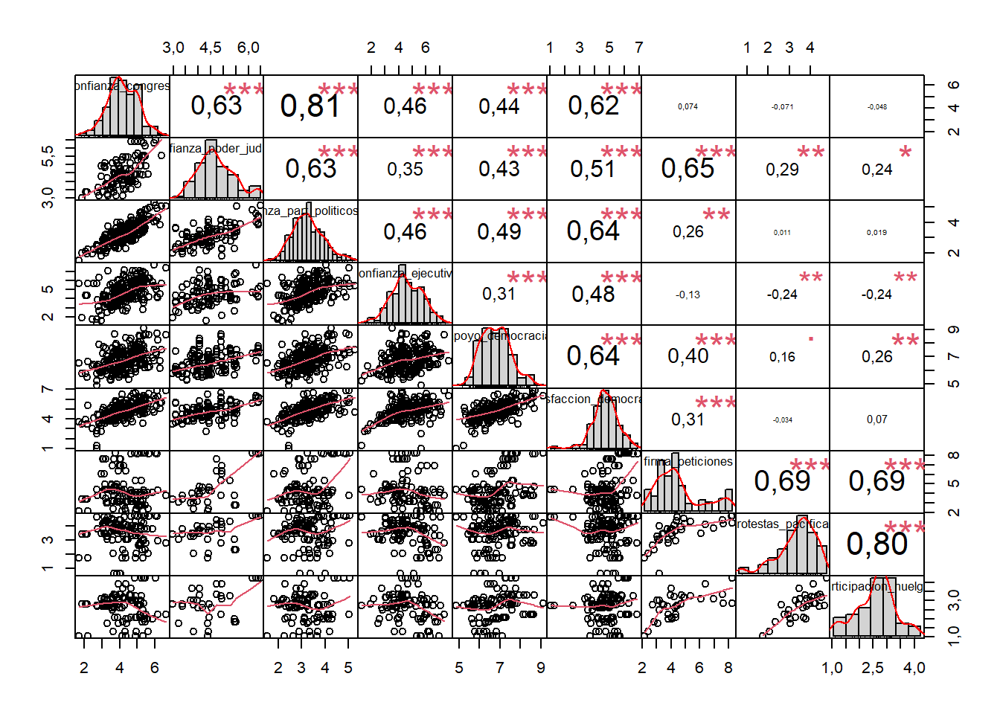
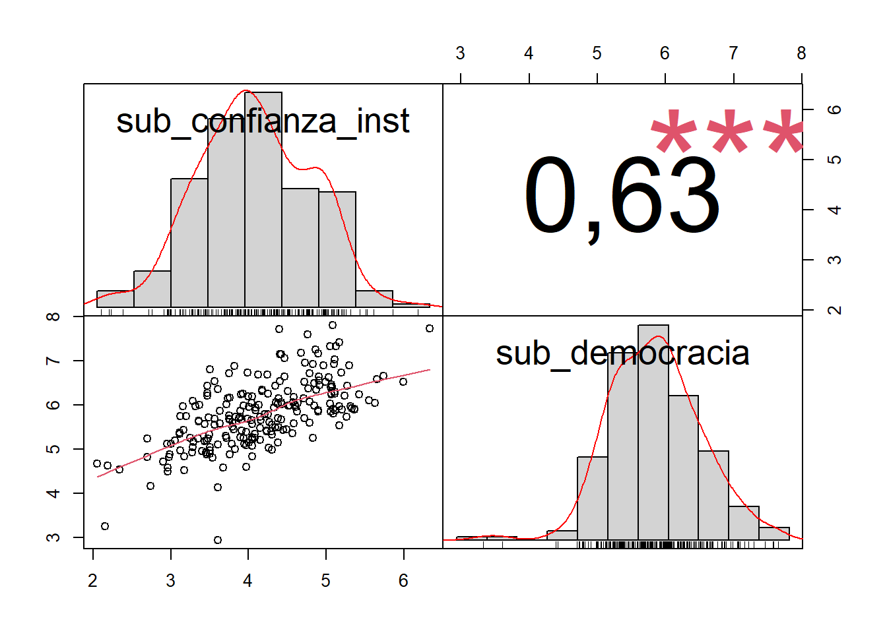
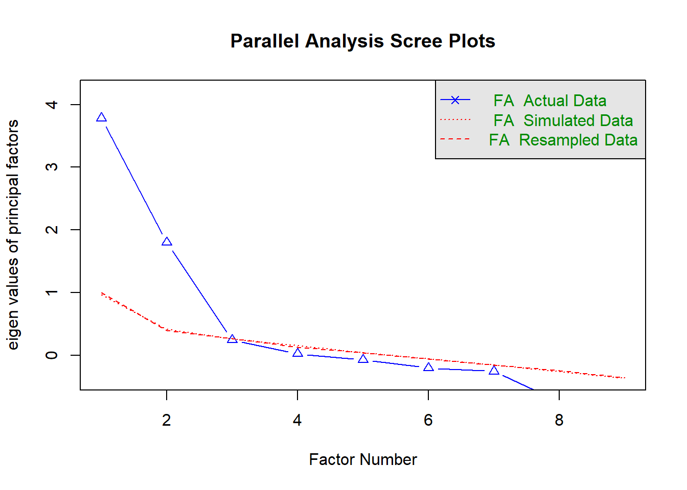
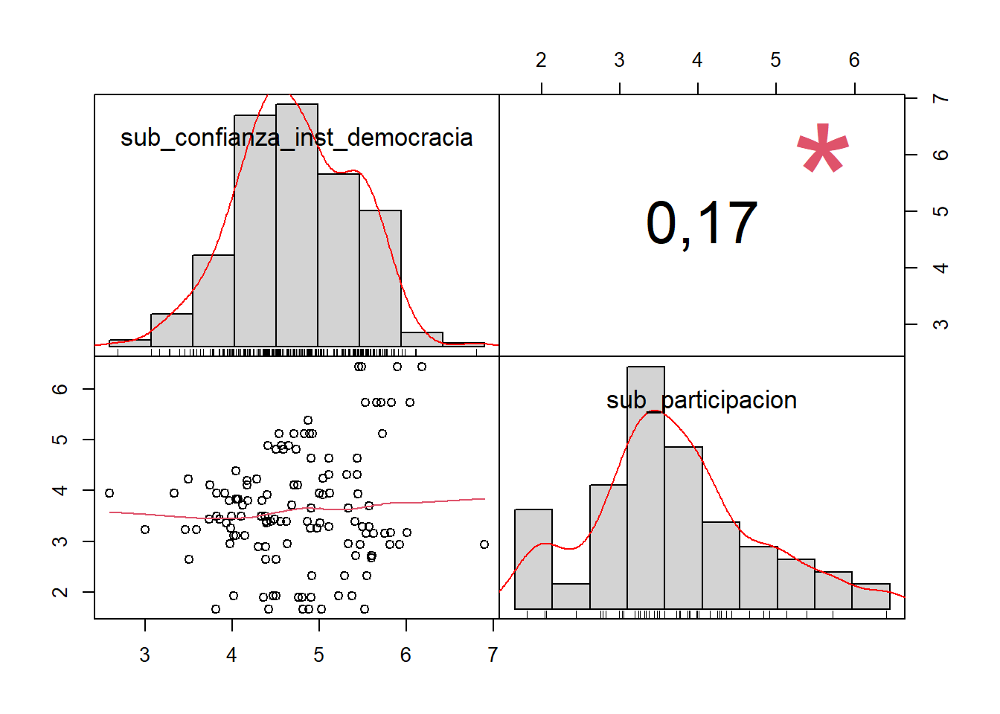
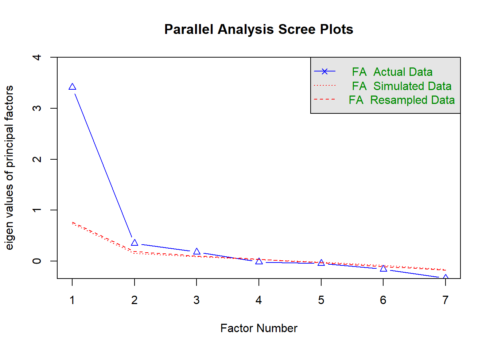
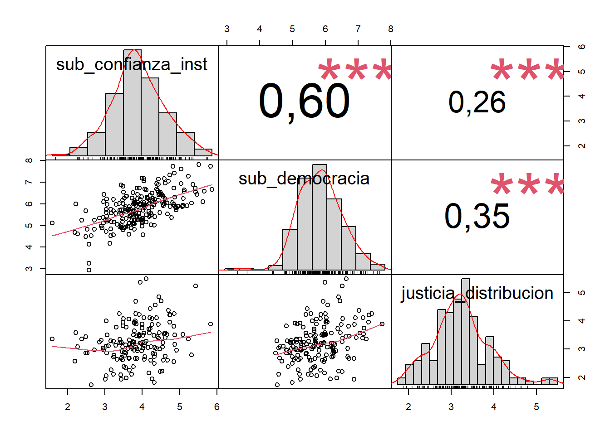

3 Cohesión Vertical
3.1 Descripción de las Variables
Se seleccionaron variables dentro de LAPOP que abordaran las subdimensiones definidas para la dimensión vertical de la Cohesión Social. Estas variables incluyen preguntas sobre confianza en autoridades e instituciones, legitimidad del sistema democrático, participación cívica y política, percepciones de justicia, meritocracia y corrupción. La Tabla 3.1 muestra un resumen descriptivo de las variables seleccionadas.
| Variable | Estadísticas / Valores | Frec. (% sobre válidos) | Gráfico | Válido | Perdidos | ||||
|---|---|---|---|---|---|---|---|---|---|
| reuniones_religiosas [numeric] |
|
175 valores distintos |  |
248 (96,9%) | 8 (3,1%) | ||||
| asociaciones_padres [numeric] |
|
175 valores distintos |  |
248 (96,9%) | 8 (3,1%) | ||||
| reuniones_comunidad [numeric] |
|
191 valores distintos |  |
251 (98,0%) | 5 (2,0%) | ||||
| participa_part_politicos [numeric] |
|
172 valores distintos |  |
245 (95,7%) | 11 (4,3%) | ||||
| part_protesta [numeric] |
|
120 valores distintos |  |
250 (97,7%) | 6 (2,3%) | ||||
| juicio justo [numeric] |
|
199 valores distintos |  |
254 (99,2%) | 2 (0,8%) | ||||
| respeto_instituciones [numeric] |
|
223 valores distintos |  |
254 (99,2%) | 2 (0,8%) | ||||
| respeto_derechos_basicos [numeric] |
|
223 valores distintos |  |
254 (99,2%) | 2 (0,8%) | ||||
| confianza_ffaa [numeric] |
|
174 valores distintos |  |
221 (86,3%) | 35 (13,7%) | ||||
| confianza_congreso [numeric] |
|
204 valores distintos |  |
254 (99,2%) | 2 (0,8%) | ||||
| confianza_policia_lapop [numeric] |
|
204 valores distintos |  |
254 (99,2%) | 2 (0,8%) | ||||
| confianza_part_politicos_lapop [numeric] |
|
201 valores distintos |  |
254 (99,2%) | 2 (0,8%) | ||||
| confianza_ejecutivo [numeric] |
|
173 valores distintos |  |
254 (99,2%) | 2 (0,8%) | ||||
| confianza_gobiernos_locales [numeric] |
|
212 valores distintos |  |
251 (98,0%) | 5 (2,0%) | ||||
| confianza_elecciones [numeric] |
|
138 valores distintos |  |
235 (91,8%) | 21 (8,2%) | ||||
| igualdad_ingresos_lapop [numeric] |
|
161 valores distintos |  |
252 (98,4%) | 4 (1,6%) | ||||
| apoyo_democracia [numeric] |
|
220 valores distintos |  |
254 (99,2%) | 2 (0,8%) | ||||
| gente_comun [numeric] |
|
165 valores distintos |  |
254 (99,2%) | 2 (0,8%) | ||||
| preocupacion_temas_importantes [numeric] |
|
164 valores distintos |  |
254 (99,2%) | 2 (0,8%) | ||||
| satisfaccion_democracia [numeric] |
|
223 valores distintos |  |
254 (99,2%) | 2 (0,8%) | ||||
| percepcion_corrupcion [numeric] |
|
171 valores distintos |  |
248 (96,9%) | 8 (3,1%) | ||||
| participacion_elecciones [numeric] |
|
192 valores distintos |  |
254 (99,2%) | 2 (0,8%) | ||||
| interes_politica [numeric] |
|
187 valores distintos |  |
254 (99,2%) | 2 (0,8%) | ||||
| confianza_poder_judicial [numeric] |
|
46 valores distintos |  |
143 (55,9%) | 113 (44,1%) | ||||
| agencia [numeric] |
|
26 valores distintos |  |
95 (37,1%) | 161 (62,9%) |
3.2 Indicadores de Democracia, Autoridad e Instituciones
Una primera subdimensión aborda variables referentes a confianza en instituciones, apoyo a la democracia y satisfacción con la democracia. En la Figura 3.1 se muestran las correlaciones de estas variables.

3.3 Indicadores de participación política
En la subdimensión de Participación política se incluyen variables relacionadas con participación en instituciones civiles (reuninones religiosas, asociaciones de padres, reuniones de la comunidad), instituciones políticas (partidos políticos, elecciones, protestas) y el interés general en la política. La Figura 3.2 muestra la correlación de estas variables.

Debido a las bajas correlaciones de participación en elecciones, interés en polítca y participación en protestas, no se considerarán estas variables.
3.4 Indicadores de Justicia y Corrupción
La subdimensión de Justicia y Corrupción incluye una variable sobre percepción de igualdad de ingresos en el país y percepción de corrupción en el país. La Figura 3.3 muestra la correlación entre estas dos variables.
La correlación entre estas dos variables es negativa, baja y significativa (p<0.01).

3.5 Análisis Factorial
Tomando en consideración los resultados presentados anteriormente, se estimó una nueva matriz de correlaciones. Estas asociaciones se muestran en la Figura 3.4
Las correlaciones de las variables de participación son muy bajas o son negativas.
Tanto igualdad de ingresos como percepción de corrupción no muestran correlaciones fuertes con ninguna variable.
Por lo tanto, quitando estas variables, las correlaciones de las variables quedan como se muestra en la Figura 3.5

| Variable | MSA |
|---|---|
| KMO Overall | 0,849 |
| confianza_congreso | 0,813 |
| confianza_poder_judicial | 0,923 |
| confianza_part_politicos_lapop | 0,819 |
| confianza_ejecutivo | 0,930 |
| apoyo_democracia | 0,831 |
| satisfaccion_democracia | 0,845 |
| Statistic | df | p_value |
|---|---|---|
| 780,454 | 15 | 0 |
Tanto el KMO (0,85) como el test de esfercidad de Bartlett indican que los datos son adecuados para un análisis factorial.

Parallel analysis suggests that the number of factors = 2 and the number of components = NA El análisis paralelo sugiere 2 dimensiones
| Factor 1 | Factor 2 | Communality | |
| confianza_congreso | 0.92 | -0.03 | 0.81 |
| confianza_poder_judicial | 0.66 | 0.05 | 0.49 |
| confianza_part_politicos_lapop | 0.88 | 0.03 | 0.81 |
| confianza_ejecutivo | 0.31 | 0.26 | 0.29 |
| apoyo_democracia | 0.07 | 0.60 | 0.43 |
| satisfaccion_democracia | -0.07 | 1.02 | 0.95 |
| Total Communalities | 3.77 | ||
| Cronbach's α | 0.82 | 0.78 | |
Los indicadores de ajuste son buenos. Sin embargo, la varianza explicada por el factor 2 es de solo 6%, y la varianza explicada total es de solo un 62%.
| Factor 1 | Factor 2 | Communality | |
| confianza_congreso | 0.92 | -0.03 | 0.81 |
| confianza_poder_judicial | 0.67 | 0.04 | 0.49 |
| confianza_part_politicos_lapop | 0.88 | 0.02 | 0.81 |
| confianza_ejecutivo | 0.33 | 0.25 | 0.29 |
| apoyo_democracia | 0.10 | 0.58 | 0.43 |
| satisfaccion_democracia | -0.02 | 0.98 | 0.95 |
| Total Communalities | 3.77 | ||
| Cronbach's α | 0.82 | 0.78 | |
Mejoran los autovalores del factor 2 y da una solución clara. El factor 1 da cuenta de confianza en instituciones y el factor 2 en apoyo/satisfacción a la democracia.
Calcular puntajes
Se estimaron promedios simples para la subdimensión de confianza en instituciones (congreso, poder judicial, partidos políticos y ejecutivo) y para la subdimensión de democracia (Apoyo a la democracia y satisfacción con la democracia).

En la Figura 3.6 se muestra que ambas subdimensiones tienen una correlación de 0,63. Sin embargo, se debe considerar que esto solo respondería a una definición mínima de cohesión vertical, sin tomar en cuenta dimensiones de participación y justicia.
3.6 Modelo incluyendo indicadores de la encuesta mundial de valores
Se incluyen indicadores de participación y justicia de la Encuesta Mundial de Valores. Para participación se incluyen indicadores de participación en protestas, huelgas y firmar peticiones. Para justicia se incluyen indicadores sobre la importancia de la igualdad de ingresos y del trabajo duro.

| Variable | MSA |
|---|---|
| KMO Overall | 0,622 |
| confianza_congreso | 0,527 |
| confianza_poder_judicial | 0,536 |
| confianza_part_politicos_lapop | 0,784 |
| confianza_ejecutivo | 0,559 |
| apoyo_democracia | 0,841 |
| satisfaccion_democracia | 0,749 |
| firma_peticiones | 0,467 |
| protestas_pacificas | 0,741 |
| participacion_huelgas | 0,655 |
| Statistic | df | p_value |
|---|---|---|
| 1722,026 | 36 | 0 |
KMO de 0,7 sugiere que los datos adecuados para un análisis factorial.

Parallel analysis suggests that the number of factors = 2 and the number of components = NA | Factor 1 | Factor 2 | Communality | |
| confianza_congreso | 0.90 | -0.12 | 0.79 |
| confianza_poder_judicial | 0.67 | 0.24 | 0.56 |
| confianza_part_politicos_lapop | 0.94 | -0.01 | 0.88 |
| confianza_ejecutivo | 0.58 | -0.30 | 0.37 |
| apoyo_democracia | 0.56 | 0.27 | 0.44 |
| satisfaccion_democracia | 0.85 | 0.07 | 0.75 |
| firma_peticiones | 0.22 | 0.83 | 0.79 |
| protestas_pacificas | -0.07 | 0.95 | 0.89 |
| participacion_huelgas | -0.05 | 0.93 | 0.86 |
| Total Communalities | 6.32 | ||
| Cronbach's α | 0.87 | 0.85 | |
Calcular puntajes

Ni en la dimensión horizontal ni en la vertical, en este set de datos, la participación parece ser un factor ni una dimensión de cohesión social.
3.7 Modelo incluyendo indicador de justicia redistributiva de Latinobarometro
Se incluyó un indicador de Latinobarometro que pregunta sobre que tan justa se percibe la distribución de ingresos en el país.

| Variable | MSA |
|---|---|
| KMO Overall | 0,820 |
| confianza_congreso | 0,825 |
| confianza_poder_judicial | 0,867 |
| confianza_part_politicos_lapop | 0,832 |
| confianza_ejecutivo | 0,935 |
| apoyo_democracia | 0,799 |
| satisfaccion_democracia | 0,802 |
| justicia_distribucion | 0,644 |
| Statistic | df | p_value |
|---|---|---|
| 883,499 | 21 | 0 |
El test KMO y el de esfericidad de Bartlett indican que los datos son adecuados para un análisis factorial.

Parallel analysis suggests that the number of factors = 3 and the number of components = NA | Factor 1 | Factor 2 | Factor 3 | Communality | |
| confianza_congreso | 0.98 | -0.12 | 0.05 | 0.82 |
| confianza_poder_judicial | 0.68 | 0.15 | -0.21 | 0.54 |
| confianza_part_politicos_lapop | 0.88 | -0.00 | 0.02 | 0.79 |
| confianza_ejecutivo | 0.31 | 0.15 | 0.21 | 0.32 |
| apoyo_democracia | -0.02 | 0.80 | -0.12 | 0.56 |
| satisfaccion_democracia | 0.06 | 0.76 | 0.19 | 0.82 |
| justicia_distribucion | -0.08 | -0.06 | 1.05 | 0.99 |
| Total Communalities | 4.85 | |||
| Cronbach's α | 0.82 | 0.78 | ||
Buen ajuste. Vamos a rotar para ver si hay una solución clara.
| Factor 1 | Factor 2 | Factor 3 | Communality | |
| confianza_congreso | 0.94 | -0.06 | 0.04 | 0.82 |
| confianza_poder_judicial | 0.64 | 0.17 | -0.20 | 0.54 |
| confianza_part_politicos_lapop | 0.85 | 0.05 | 0.02 | 0.79 |
| confianza_ejecutivo | 0.32 | 0.18 | 0.20 | 0.32 |
| apoyo_democracia | -0.02 | 0.79 | -0.11 | 0.56 |
| satisfaccion_democracia | 0.08 | 0.77 | 0.18 | 0.82 |
| justicia_distribucion | 0.01 | 0.02 | 0.99 | 0.99 |
| Total Communalities | 4.85 | |||
| Cronbach's α | 0.82 | 0.78 | ||
Se mantienen los factores relacionados a instituciones y democracia. El nuevo indicador aparece como un tercer factor independiente que explica el 16% de la varianza total.
Calcular puntajes

El indicador muestra correlaciones moderadas con los indicadores de democracia y confianza en las instituciones.
3.8 Propuesta final
Finalmente, considerando los análisis previos, proponemos utilizar tres subdimensiones para medir cohesión vertical:
Confianza en instituciones: Medida a partir de las variables de confianza en el congreso, el poder judicial y los partidos políticos
Actitudes hacia la democracia: Medida a partir de las variables de Apoyo a la democracia y de satisfacción con la democracia
Justicia distributiva: Medida a partir de la variable que pregunta qué tan justa se percibe la distribución de ingresos en el país
